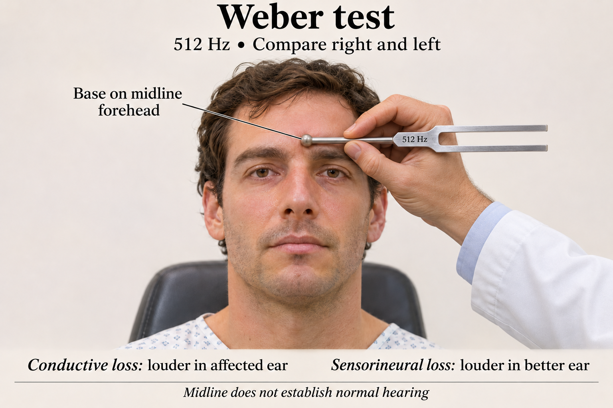
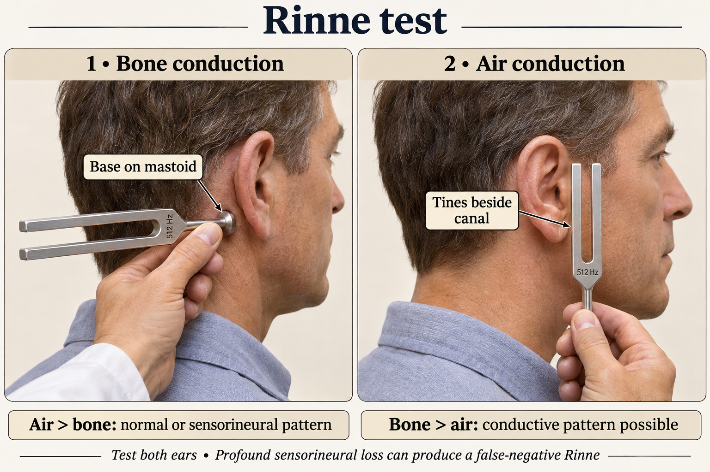

Original AI-generated medical illustrations. No real patient photographs or third-party artwork. Planned placement: bedside classification and Fork Lab. Tap each image to inspect full size.


Replaces both schematic illustrations throughout the consult. Interactive interpretation and clinical recommendations remain unchanged.